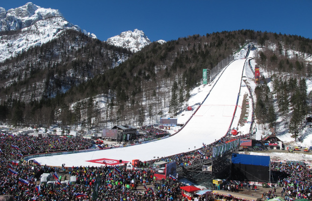

Kranjska Gora
Położona w rejonie Gorenjska, nieopodal Włoch i Austrii, strzeżona przez majestatyczne szczyty Alp Julijskich, Kranjska Gora jest przez wielu uważana za zimową stolicę Słowenii. Także ze względu na bezpośrednio sąsiedztwo Planicy - światowej stolicy lotów narciarskich.
W 10 minut można stąd dojechać na pizzę do Włoch (latem to cudna wycieczka rowerowa). Przejazd do Austrii zajmuje nieco dłużej (około 25 minut).
Miasto
Kranjska Gora to miasto i zarazem popularny kurort zimowy w północno-zachodniej Słowenii, położony w Alpach Julijskich w sąsiedztwie Włoskiej i Austriackiej Granicy. Jeszcze w połowie XIX wieku stanowiła ona niewielką alpejską wioskę, która po wybudowaniu linii kolejowej przeistoczyła się w turystyczne centrum sportów narciarskich. W sezonie zimowym w okolicy miasteczka funkcjonuje wiele wyciągów orczykowych i krzesełkowych, które rozwożą miłośników białego szaleństwa na liczne dobrze przygotowane trasy zjazdowe o zróżnicowanych poziomach trudności.
Planica

Fanom skoków narciarskich Planicy przedstawiać nie trzeba. To właśnie w tej pięknej, słoweńskiej dolinie przy granicy z Włochami w marcu odbywa się ostatni z konkursów w ramach Pucharu Świata w skokach, który przyciąga kibiców z całego świata, w tym wielu Polaków.
Kompleks narciarski składa się z siedmiu skoczni. Największa ma wielkość 240 m i jest uznawana za jedną z dwóch największych obiektów do lotów narciarskich.
Jeden z rekordowych skoków oddał na niej Kamil Stoch. W 2017 roku doleciał na 251m.
Jezioro Bled
Jezioro Bled – najpiękniejsze i najsłynniejsze jezioro Słowenii, prawdziwa turystyczna perełka i absolutnie zasłużona wizytówka kraju, miejsce, które warto i trzeba zobaczyć. Położone pośród lasów i skał, z czystą szmaragdową wodą i uroczą małą wysepką na środku – Blejski Otok. Jezioro wygląda wręcz baśniowo. Na wyspie stoi kościółek Maryi Wspomożycielki, w którym znajduje się bardzo popularny dzwon życzeń.
Dzięki aktywnym źródłom termalnym Bled jest jednym z najcieplejszych alpejskich jezior, z temperaturą dochodzącą nawet do +26 °C.
Kulinarnym przebojem Bledu są “kremne rezine” – kultowe, przepyszne bledzkie kremówki.
Wąwóz Vintgar z wodospadem Šum
Jest to jedna z największych atrakcji turystycznych Słowenii. Dnem skalnego kanionu płynie rwąca górska rzeka, na końcu czeka nas widok wysokiego wodospadu Šum. Wodospad ma wysokość 13 m i jest największym słoweńskim wodospadzie rzecznym. Po drodze zobaczymy imponujący most, który jest największym kamiennym mostem kolejowym zachowanym w całości w Słowenii. Wycieczkę można też przedłużyć i zwiedzić zabytkowy XV-wieczny gotycki kościół św. Katarzyny, przy okazji robiąc zgrabną pętlę.
Triglav
Triglav – najwyższa góra Słowenii i Alp Julijskich. Jej majestatyczna, północna ściana o wysokości ponad 1000 m i 3000 m szerokości jest jedną z najpotężniejszych skalnych ścian w całych Alpach. Triglav to także święta góra Słoweńców i niezwykle popularny cel wycieczek, w sezonie letnim wręcz obleganym, na jej szczyt wchodzą całe grupy rodzinne. Wizerunek góry znajduje się w godle państwowym. Duże zasługi w popularyzacji turystyki miał ksiądz Jakob Aljaž, który w 1889 r. odkupił szczyt góry, by został w słoweńskich rękach. Z jego inicjatywy na szczycie ustawiono okrągłą metalową wieżę, tzw. Aljažev Stolp (Wieża Aljaża) oraz wybudowano schronisko – Triglavski dom na Kredarici (2515 m).
Na narty
Poczatkujący narciarze mogą skorzystać w sumie z 10 km tras łatwych. Oprócz tego są tereny wyznaczone do nauki jazdy na nartach. Liczne szkółki narciarskie posiadają dużą ofertę grup wiekowych o różnym stopniu zaawansowania. Osoby, które nie posiadają własnego sprzętu mogą skorzystać z wielu wypożyczalni, znajdujących się w różnych miejscach na terenie ośrodka.
Tras dla średniozaawansowanych narciarzy jest w sumie ok. 8 km. Trasy o różnym charakterze nadają się również dla bardziej doświadczonych i wymagających osób.
Trasy trudne dla zaawansowanych narciarzy mają tylko 2 km. Pomimo iż jest ich stosunkowo mało, to są znakomicie przygotowane i niejednokrotnie mogą przedstawiać wyzwanie.
Łagodne zjazdy czekają na amatorów dziewiczych tras na stokach Karavanki. Amatorzy adrenaliny odnajdą się w Alpach Julijskich. Propozycja dla zaawansowanych to zjazd z Mojstrovki, Kotovego siodła pod szczytem Kriška. Drugą propozycją jest trasa Triglav – od Kredaricy do Krmy, albo od Dovškiej baby pod Karavanką.